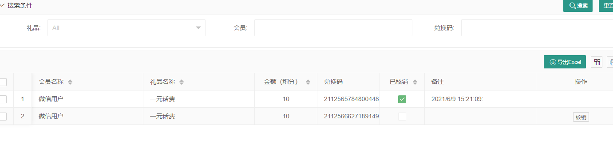
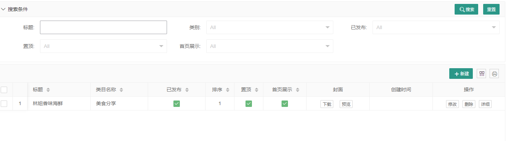

Backend operation manual
tips: The management of various ticket sales ports, ticket settings, payment, reports, parameters and other functions of the Zhonglian Ticketing System are all managed by a unified background management. Different roles will see different functions when logging into the background management system.
To view the latest demo version, please visit https://ticket.anjian99.com
Log in to the Zhonglian Ticketing System
Open the backend URL, enter the username and password to log in. The default username is admin and the password is 000000

Backend homepage
The upper part of the homepage provides quick access to various common functions, as well as key data indicators for the day. More detailed reports can be viewed in the report details.

System Management
System management is mainly for the management of background users/roles, permission settings, navigation menu management, and system log records.
User Management
The users here refer to the users who can log in to the background and the salesperson accounts of each ticket sales terminal. In the user management interface, we can add/edit users, modify user login passwords, enable/disable user accounts, and delete users (use the delete function with caution, if you don't want users to log in to the system, just disable them).
Role management
In the ticketing system, the permission control of each user account is realized through role management. A user can have multiple role identities, and a role can also include multiple users. By setting the page permissions of the role, the system functions that the user has can be controlled.

Menu management
Menu management is the setting and arrangement of the background navigation menu. By default, we have set all the menus. You can also adjust the menu according to your actual situation. After adjusting the menu, you need to click "Refresh Menu" and log in again to take effect.

Log
The log system will record background operations and API interface operation records. When the system has an exception, it will record detailed error information for operation and maintenance personnel to troubleshoot and refer to. The log recording level can be set through the configuration file. Under normal circumstances, the system will not actively delete any log records. If you feel that too many logs affect the system response, you can delete them manually.

Basic settings
The basic settings are mainly some parameter settings of the ticketing system, such as payment institution parameter settings, self-service machine parameter settings, applet parameter settings, official account parameter settings, OTA parameter settings and other parameter settings. Ticket classification and distribution channels are also placed in the basic settings. You can rearrange the menu according to your own preferences in the menu management.
Parameter settings

Ticket classification
Although the system supports multi-level classification, for the convenience of operation on the ticket vending machine, it is recommended to only do first-level classification.

Distribution channels
The distribution channels here do not involve any settlement or commission, but are just for the convenience of statistics on the promotion of ground promotion personnel. If you want to reward them based on their merits, you can view the statistical data in the distribution statistics report.

Ticket management
Ticket management is the core part of the entire ticketing system. The setting of ticket types and the setting of ticket sales/checking permissions are all managed here.
Ticket management
Various ticket types (annual pass, package ticket, multi-ride ticket, etc.), ticket sales restrictions, promotion commissions, point rewards, and usage dates can be combined to generate different types of tickets. Due to the limited space, we will introduce in detail in another article how to generate various common ticket types through parameter combination.


Ticket sales settings
The ticket sales authority of each salesperson/ticket sales channel can be set. On the ticket sales interface, the salesperson can only see the tickets they are authorized to sell. Through the setting of ticket sales authority, we can easily realize that different channels sell different tickets. Through the setting of data authority, the salesperson can only see their own sales situation after logging into the background system. For specific data authority settings, please refer to Data Authority Settings


Ticket checking equipment
In our system, turnstiles, handheld ticket checkers, and ticket checking apps are collectively referred to as ticket checking equipment. The ticket checking equipment has two traffic directions: in and out. In some occasions, you need to swipe your card and scan the code for both in and out. Then we can achieve this by setting up two ticket checking equipment (one in and one out). The ticket checking equipment also has permission settings. Only when the ticket is checked can the equipment check the corresponding ticket. When the ticket checking equipment is no longer in use, you can delete the equipment. Usually, to ensure the integrity of the system data, we do not recommend that you delete the equipment, but recommend that you disable the equipment.


Refund management
You can initiate a refund here, and the amount will be returned to the original path. If the guest has already used the ticket, but cannot continue to experience the service corresponding to the ticket due to some factors, you can force a refund to the guest. It is worth noting that each ticket can only be refunded once, so the refund amount must be confirmed with the customer before initiating the refund.

Commission and withdrawal
This function corresponds to the distribution and promotion on the applet. Member users can get corresponding commissions by sharing the applet with friends and relatives, and friends can buy tickets on the applet. After getting the commission, members can apply for withdrawal on the applet. After the background staff approves it, they will transfer the money to the member. It is worth mentioning that the commission will not be credited immediately after a friend buys a ticket, but will be credited after the ticket is verified and used.


Report details
Here are the various reports, order details and payment documents of the system.
Payment documents
Payment documents refer to the transaction records of third-party payment institutions, including ticket orders and ticket refund orders. The data here can be used as a reconciliation statement with third-party payment institutions. The system has a transaction exception detection mechanism, and orders with payment timeout or payment exceptions will be automatically reversed by the system.

Ticket checking records
Record the usage of tickets

Ticket orders
This is the ticket sales details. It is specially explained that the "export password" function is used in conjunction with the "password activation" on the applet. The platform can issue passwords to members through the official account, and members can then activate the tickets through the password activation function.

Distribution statistics
The order statistics of offline ground promotion and distribution personnel, the reports here can be used as the basis for commission distribution

Refund records
The amount of refunds in the system is returned to the original path. This is only for recording. Whether the third-party payment is successfully refunded needs to be checked in the payment documents.
Ticket statistics
Statistics of the sales of each ticket by day in the form of charts, which can be filtered by time range and exported easily

Channel statistics
Different from distribution statistics, here the data is counted by salesperson (channel)

Points and gifts
Members can get points by purchasing tickets or signing in on the applet. After getting points, they can redeem gifts in the points mall. After redeeming gifts, they need to be verified in the background.
Points record
Record the changes of each member's points

Gift management
Add, delete, modify and check gifts. The added gifts will be displayed on the applet (only when "available" is checked). When members have enough points, they can redeem gifts.

Gift exchange
Users initiate exchanges on the applet, and the background reviews and verifies them before issuing gifts.

Information Management
You can publish some travel guides, event introductions or promotional articles. These articles will be displayed on the applet and self-service machines.
